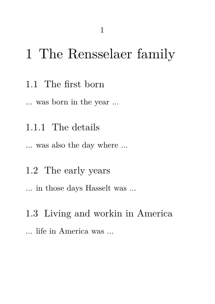
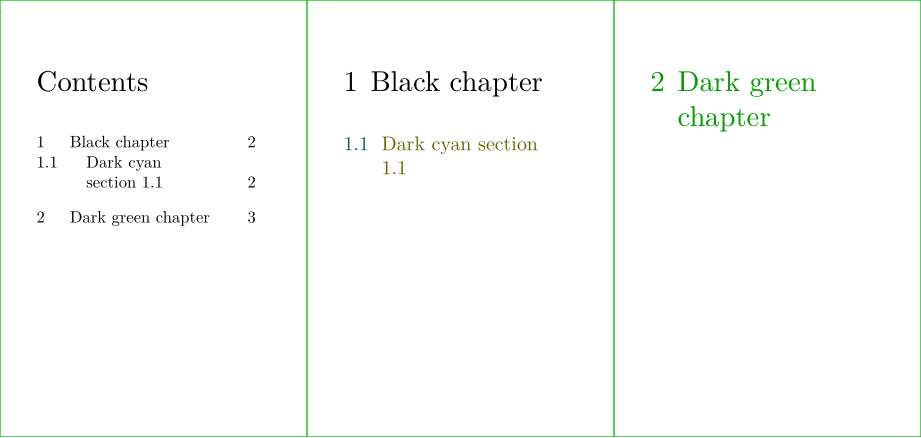
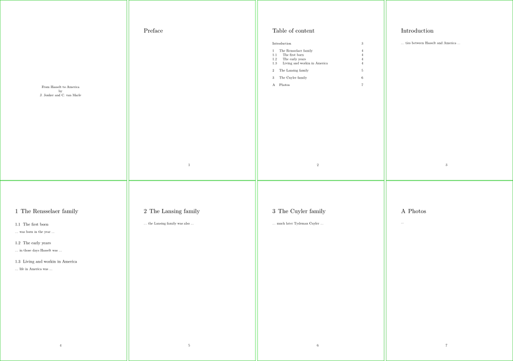
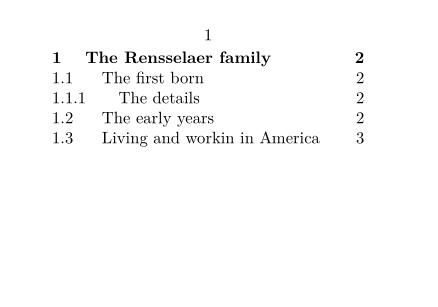
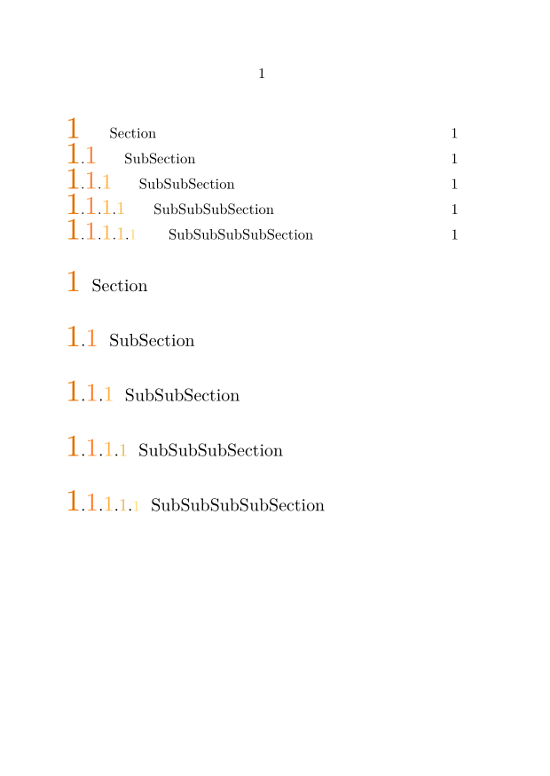
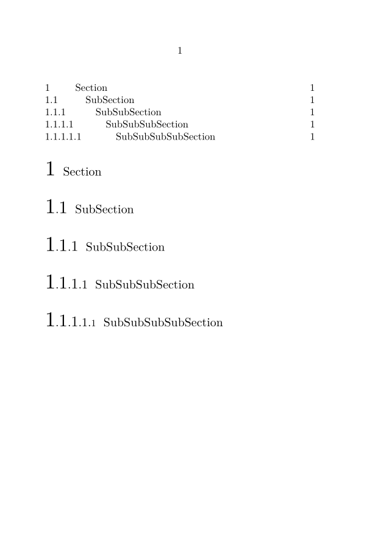
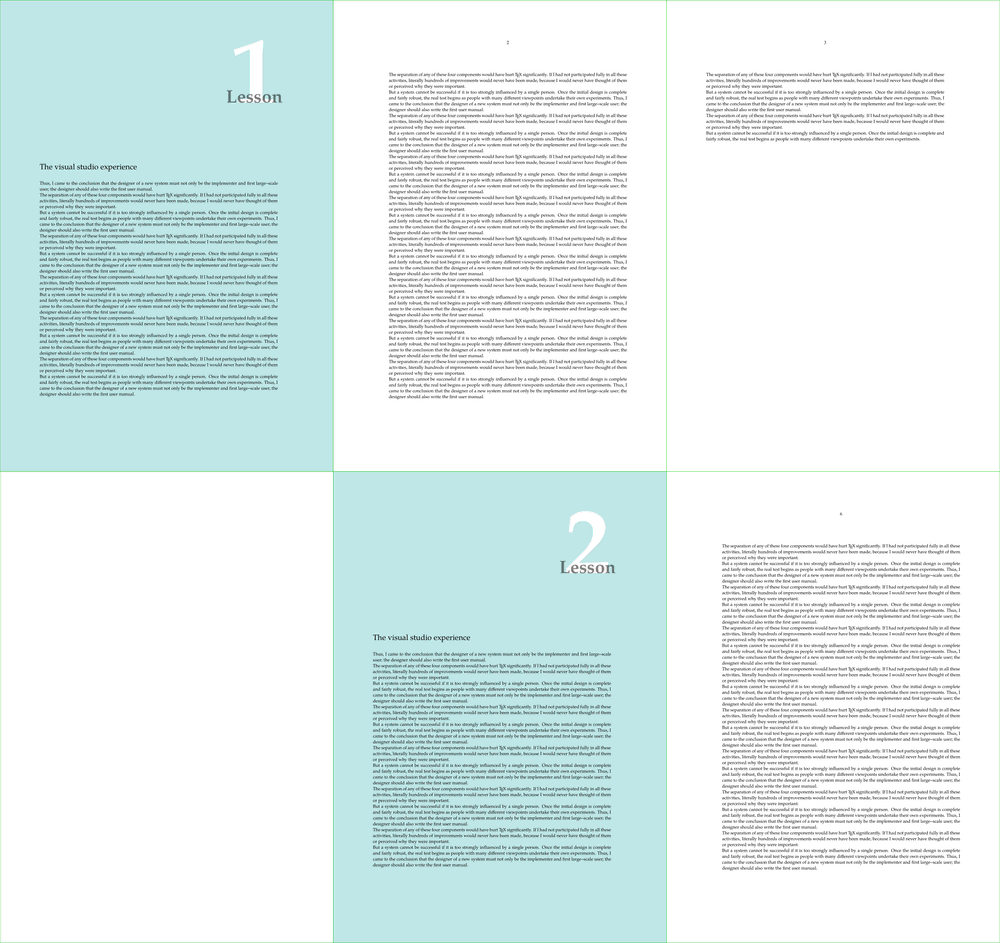

Contents
Definition of the sections and their headlines
Sections define the structure of your content. Decide yourself how deep you want to nest them, there are 12 levels of depth predefined.
The following keys are available for the start-commands (see the reference \startsection).
| Key | Description |
|---|---|
title= |
the title of the section |
reference= |
the reference key for cross-referencing (with \at, \in etc.) |
list= |
the title to show in the table of contents, if different |
bookmark= |
the title to show in the PDF bookmarks, if different |
marking= |
the title to use in the section marking, if different |
ownnumber= |
a sectioning number to use instead of the calculated one. |
The unnumbered versions don’t appear in a table of contents! To change that, see the section on Unnumbered titles in the table of contents.
Also note that in the front matter of the document, all titles are unnumbered by default. The titles from the 'numbered' category still show up in the table of contents, though, and the titles from the 'unnumbered' category still don't.
-
\setuppapersize[A7] \starttext \startchapter [title={The Rensselaer family}, reference=rensselaer] \startsection [title={The first born}] ... was born in the year ... \startsubsection [title={The details}] ... was also the day where ... \stopsubsection \stopsection \startsection [title={The early years}] ... in those days Hasselt was ... \stopsection \startsection [title={Living and workin in America}] ... life in America was ... \stopsection \stopchapter \stoptext
- 
Referencing sections and headlines
See reference within the document.
Styling headlines
Here the key command is \setuphead for which you will find a Headlines formatting.
An example
-
\setuppapersize[A8,landscape] \setupbodyfont[adventor] \setuphead [section] [color=darkred, % This is how you change the section’s headline color. style={\bfa}, % it's font alternative style before={\color[darkred]{\hrule}}] % a command to insert before the title \starttext \startsection[title=Hello] world ! \stopsection \stoptext
-

| TODO: here few examples of common questions, how to handle page break, how-to add a mini-toc, material probably already existing on the wiki (See: To-Do List) |
Using colors in chapters and sections
For colorful chapters or sections refer to \setuphead. Take a look at the following example:
-
\definepapersize[sheet][width=156mm,height=74mm] \setuppapersize[A8][sheet] \setuppaper[nx=3,ny=1] \setuparranging[XY] \showframe[edge] \setuphead [align={flushleft, nothyphenated, verytolerant}] \setupcolors[state=start] \setuphead [chapter] [header=empty] % Chapter pages won’t have headers \setuphead [section] [textcolor=darkyellow, % how you change the color of the text numbercolor=darkcyan, ] % how you change the color of the number \setupheadertexts [] [chapter] % in the header, the chapter's name \setupheadertexts [] \starttext \completecontent \startchapter[title={Black chapter}] \startsection[title={Dark cyan section 1.1}] \stopsection \stopchapter \setuphead [chapter] % This works, but avoid changing in the middle of your document, [color=darkgreen] % better define different versions of chapter, see next section \startchapter[title={Dark green chapter}] \stopchapter \stoptext
- 
Macro divisions of a document
ConTeXt comes with a predefined overall structure in which the document is
divided into four main document divisions (here we try to avoid the word section)
which are delimited with their associated start and `stop' commands:
- front matter: \startfrontmatter … \stopfrontmatter
- body matter: \startbodymatter … \stopbodymatter
- appendices: \startappendices … \stopappendices
- back matter: \startbackmatter … \stopbackmatter
The chapters in your book can be divided over these divisions.
\starttext \startstandardmakeup \midaligned{From Hasselt to America} \midaligned{by} \midaligned{J. Jonker and C. van Marle} \stopstandardmakeup %================================================== \startfrontmatter \starttitle [title=Preface] \stoptitle \completecontent \startchapter [title=Introduction] ... ties between Hasselt and America ... \stopchapter \stopfrontmatter %================================================== \startbodymatter \startchapter [title={The Rensselaer family}, reference=rensselaer] \startsection [title={The first born}] ... was born in the year ... \stopsection \startsection [title={The early years}] ... in those days Hasselt was ... \stopsection \startsection [title={Living and workin in America}] ... life in America was ... \stopsection \stopchapter \startchapter [title={The Lansing family}, reference=lansing] ... the Lansing family was also ... \stopchapter \startchapter [title={The Cuyler family}, reference=cuyler] ... much later Tydeman Cuyler ... \stopchapter \stopbodymatter %================================================== \startappendices \startchapter [title={Photos}] ... \stopchapter \stopappendices \stoptext
In the front matter as well as back matter, the command \startchapter produces an un-numbered header in the table of contents. The front matter is mostly used for the table of contents, the list of figures and tables, the preface, the acknowledgements, etc. It often comes with a Roman page numbering.
The appendices division is used for (indeed) appendices. Headers may be typeset in a different way; for example, \startchapter may be numbered alphabetically.
- 
Table of content
To get the default table of contents use \completecontent and \placecontent
\completecontent % to insert ToC without a unnumbered section \placecontent % to the ToC only
The table of content make a index of the sections you select with \setupcombinedlist[content][list={…,…,…}].
\setuplist allows specific setups for each section level.
See this example
-
\setuppapersize[A8,landscape] \setupcombinedlist [content] [list={chapter,section,subsection}] \setuplist[chapter][style=\bold] \starttext \placecontent \startchapter [title={The Rensselaer family}, reference=rensselaer] \startsection [title={The first born}] \startsubsection [title={The details}] \stopsubsection \stopsection \startsection [title={The early years}] \stopsection \startsection [title={Living and workin in America}] \stopsection \stopchapter \stoptext
- 
And this one without the subsection
-
\setuppapersize[A8,landscape] \setupcombinedlist [content] [list={chapter,section}] \setuplist[chapter][style=\bold] \starttext \completecontent \startchapter [title={The Rensselaer family}, reference=rensselaer] \startsection [title={The first born}] \startsubsection [title={The details}] \stopsubsection \stopsection \startsection [title={The early years}] \stopsection \startsection [title={Living and workin in America}] \stopsection \stopchapter \stoptext
-

One important quirk. If you do not start the document with \completecontent, but use it later –for example after the introduction–, you should use:
\setupcombinedlist[content][list={chapter,section,subsection}]
\completecontent[criterium=all]
When \completecontent is at the end of the document you can use:
\completecontent[criterium=previous]
Numbering
Key command here are
- \setupheads [sectionconversionset=…] to select the conversionset
- \definestructureconversionset to define the conversionset you want
- and maybe \defineprocessor to style the numbers (see also Processors ).
Look at the existing conversion at page \defineconversion.
Setup of headline also influence the table of content.
-
\setuppapersize[A6] \usecolors[crayola] \definefontsize [n] \definebodyfontenvironment [default] [n=1.0] \defineprocessor [level_3] [style=\tfd,color=MangoTango] \defineprocessor [level_4] [style=\tfc,color=Orange] \defineprocessor [level_5] [style=\tfb,color=YellowOrange] \defineprocessor [level_6] [style=\tfa,color=MaximumYellowRed] \defineprocessor [level_7] [style=\tfn,color=OrangeYellow] % ALSO POSSIBLE % \defineprocessor [level_3] [style=\glyphscale\numericscaled1.73\glyphscale\relax] % \defineprocessor [level_4] [style=\glyphscale\numericscaled1.44\glyphscale\relax] % \defineprocessor [level_5] [style=\glyphscale\numericscaled1.20\glyphscale\relax] % \defineprocessor [level_6] [style=\glyphscale\numericscaled1.00\glyphscale\relax] % \defineprocessor [level_7] [style=\glyphscale\numericscaled0.80\glyphscale\relax] \defineconversionset [mysectionnumbers] [n,n,level_3->n,level_4->n,level_5->n,level_6->n,level_7->n] [n] \setupheads [sectionconversionset=mysectionnumbers] \starttext \placecontent \startsection [title={Section}] \startsubsection [title={SubSection}] \startsubsubsection [title={SubSubSection}] \startsubsubsubsection [title={SubSubSubSection}] \startsubsubsubsubsection [title={SubSubSubSubSection}] \stopsubsubsubsubsection \stopsubsubsubsection \stopsubsubsection \stopsubsection \stopsection \stoptext
- 
If you want to decouple them, you must also use
- \setuplist […,…][numberconversionset=…] to select the conversionset
- \definestructureconversionset to define the conversionset you want
-
\setuppapersize[A6] \defineprocessor [level_3] [style=\glyphscale\numericscaled1.73\glyphscale\relax] \defineprocessor [level_4] [style=\glyphscale\numericscaled1.44\glyphscale\relax] \defineprocessor [level_5] [style=\glyphscale\numericscaled1.20\glyphscale\relax] \defineprocessor [level_6] [style=\glyphscale\numericscaled1.00\glyphscale\relax] \defineprocessor [level_7] [style=\glyphscale\numericscaled0.80\glyphscale\relax] \defineconversionset [mysectionnumbers] [n,n,level_3->n,level_4->n,level_5->n,level_6->n,level_7->n] [n] \definestructureconversionset [mysectionnumbersforlist] [N] [N] \setupheads [sectionconversionset=mysectionnumbers] \setuplist [section, subsection, subsubsection, subsubsubsection, subsubsubsubsection] [numberconversionset=mysectionnumbersforlist] \starttext \placecontent \startsection [title={Section}] \startsubsection [title={SubSection}] \startsubsubsection [title={SubSubSection}] \startsubsubsubsection [title={SubSubSubSection}] \startsubsubsubsubsection [title={SubSubSubSubSection}] \stopsubsubsubsubsection \stopsubsubsubsection \stopsubsubsection \stopsubsection \stopsection \stoptext
- 
Example of how to set up a chapter page
This example shows a common use of:
- \startuseMPgraphic
- \startsetups
- \globalenablemode , \globaldisablemode , \doifelsemode
- \startsetups
- \defineoverlay and \setupbackgrounds
-
% For the wiki ============================================== \definepapersize[sheet][width=630mm,height=594mm] \setuppapersize[A4][sheet] \setuppaper[nx=3,ny=2] \setuparranging[XY] \showframe[edge] % MetaPost MetaFun ========================================== \startuseMPgraphic{MPchapter} StartPage ; fill Page withcolor 0.25[white,darkcyan] ; picture p, q ; p := textext.drt("\bf\getmarking[chapternumber]") scaled 21 ; q := textext.drt("\bf Lesson") scaled 4 ; q := q shifted ((xpart center p) - (xpart center q), 0); draw image ( draw p withcolor white ; draw q withcolor transparent(1,0.5,black)) shifted ((urcorner Field[Text][Text]) - (urcorner p)); StopPage ; \stopuseMPgraphic % MODE ====================================================== % Background content depends if page is a chapter page or not % Let's define a "mychapterpage" mode, with \globalenablemode % This mode is triggered by the chapter head ("before" param) % For code clarity we use a Setup. \setuphead [chapter] [ before=\setup{chapter:before}, number=no, % do not display the number in the headline header=high, % remove the header for the page ] \startsetups chapter:before \globalenablemode[mychapterpage] \blank[force,20*line] \stopsetups % BACKGROUND USING THE MODE ================================= % The background will depend on whether ‘mychapterpage’ mode % is active or not. % Usual solution: push content in an overlay and use overlay % as background. % For code clarity we use a Setup. \startsetups pagebackground \doifelsemode {mychapterpage} { \useMPgraphic{MPchapter} \globaldisablemode[mychapterpage] } { % here: todo if not a chapterpage } \stopsetups \defineoverlay [OLpagebackground] [\setup{pagebackground}] \setupbackgrounds [page] [background=OLpagebackground] % DEMO ====================================================== \setuppagenumbering % OPTIONAL [alternative=doublesided] \definepagebreak % OPTIONAL [mychapterpagebreak] [yes,header,right] \setuphead % OPTIONAL [chapter] [page=mychapterpagebreak] \setupbodyfont[pagella] % OPTIONAL \starttext \dorecurse{3}{% \startchapter[title={The visual studio experience}] \dorecurse{5}{\input knuth \input knuth \input knuth} \stopchapter} \stoptext
- 